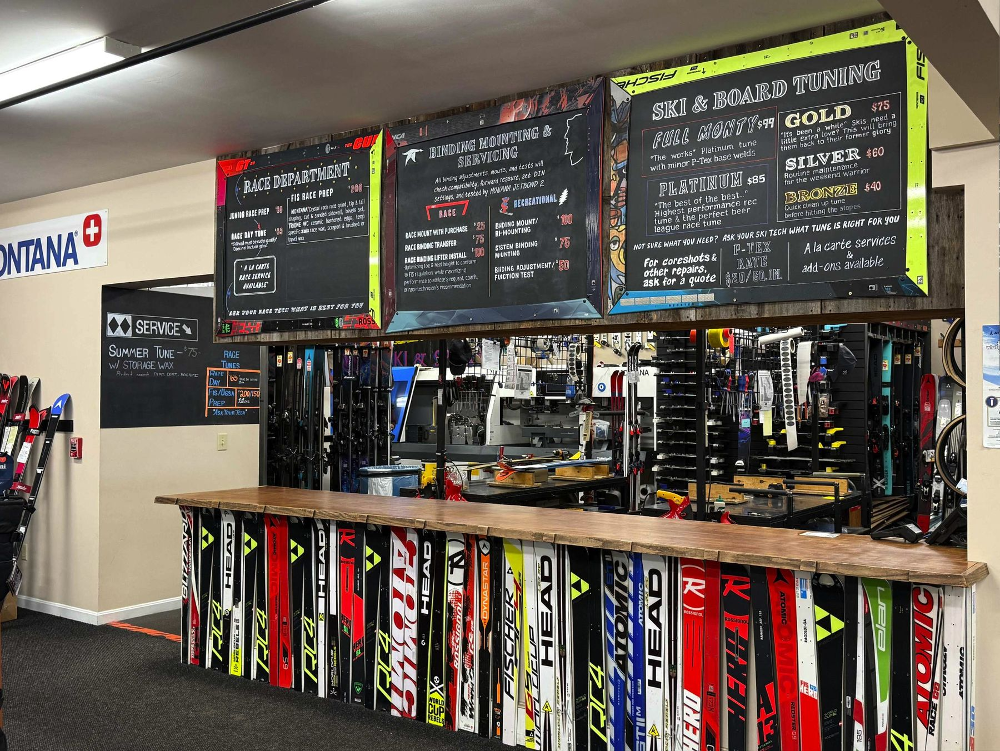
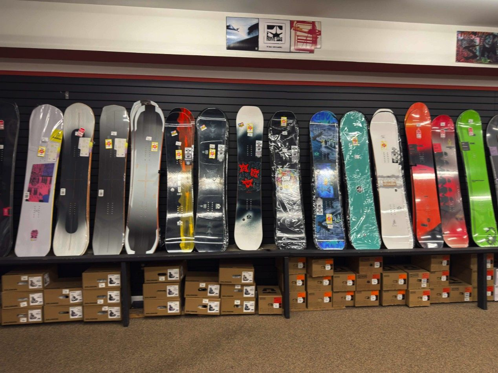
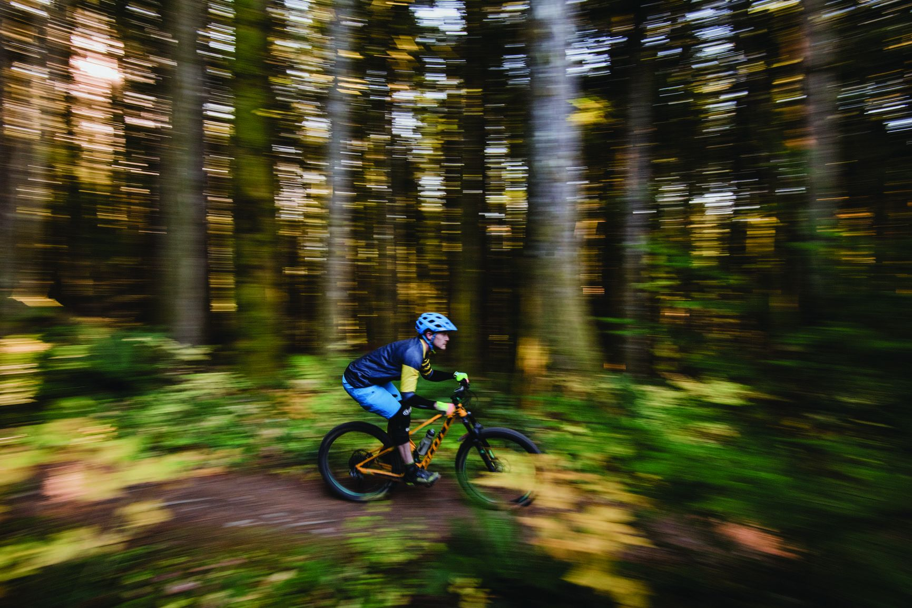
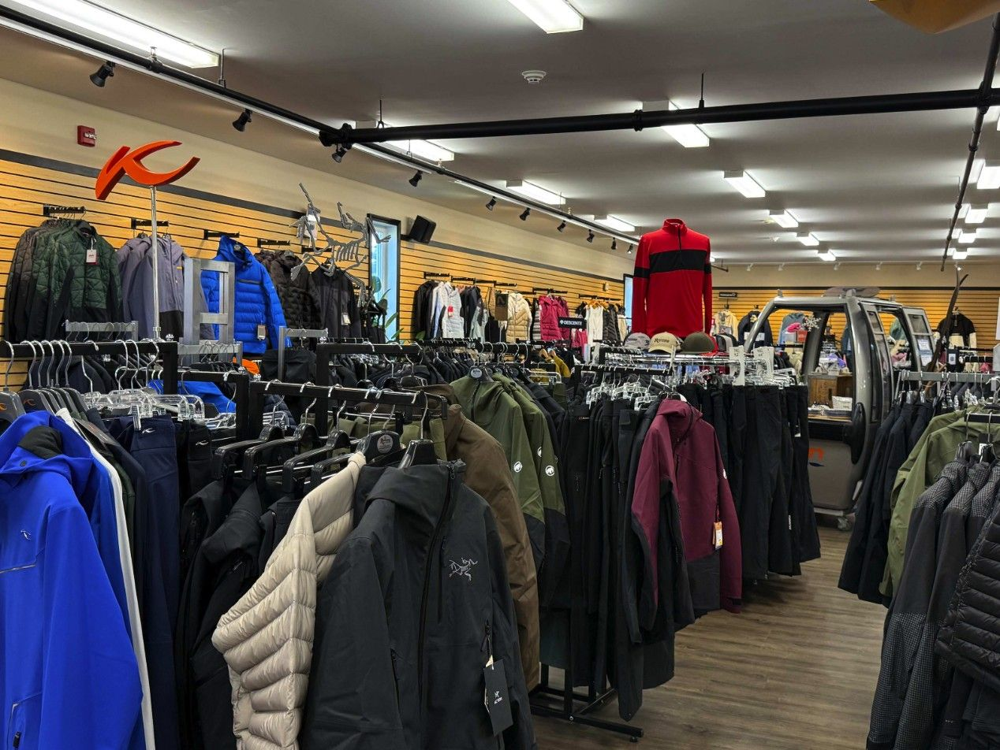

Lincoln, New Hampshire
5 Railroad St, first exit off I-93, minutes from Loon. Skis, the Mothership snowboard shop, bikes, rentals, the Boot Lab and the tune room. Open every day 8:30–5.
First shop skiers reach off I-93
Heading to Loon, Cannon or anywhere in the Whites: stop here first, gear up, and skip the base-area lines. New Hampshire has no sales tax, and our staff spends its days off on the same hills you’re driving to.
This is the store for rentals, snowboards and full race prep. Scarborough, our Maine store, runs a different program: no rentals or snowboards there, but the Junior Seasonal Lease and a full ski and bike shop.

Service deskDepartments
Everything in the Lincoln store, each on its own page.

Ski
Skis, boots and bindings from thirteen brands, staffed by people who ski Loon and Cannon weekly.

Snowboard
The Mothership: riding east since ’88. Boards, boots and bindings.

Bikes
Mountain, road, hybrid, e-bikes and kids’ bikes, with tunes from $50.

Services & Tuning
Tunes from $40 to the Full Monty, mounting, race day tunes.

Rentals
Junior packages from $20 a day, demo skis, snowboards, snowshoes and cross-country.

Accessories
Helmets, goggles, gloves, heated gear, hats, bags. Forgot something on the way up? We’re the first exit.

Apparel
Outerwear from twenty-two brands, layers, and sweaters for East Coast conditions.

The Boot Lab
Custom fitting, insoles, canting, stance and alignment, and FIS and USSA race prep.
Staff picks from Lincoln
All staff picks →
Atomic Arc 735 RS
“One of the most enjoyable mid-radius carvers on the market in the X9S — the limited edition 1990-91 Arc graphic will make all your friends jealous and be a conversation starter in the lift line.”

Blizzard Black Pearl
“The two-piece Titanal layup gives you real edge hold on the hardpack, but the women's-specific wood core keeps it light and playful enough to throw around all day.”
Find the store
5 Railroad St, Lincoln, NH 03251
Hours · Lincoln, NH
| Every day | 8:30 – 5:00 |
Hours and holiday changes sync from the store’s Google Business Profile.